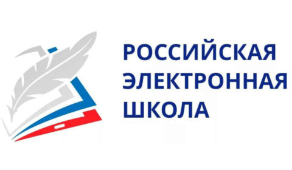

Персональный айт учителя начальных классов Рубан Татьяны Сергеевны
Вы находитесь на странице " Обучающимся и родителям"
В этом разделе вы найдете тренажеры для закрепления знаний и умений, а так же интересные физминутки.
Интерактивные тренажеры
- Учи.ру
Учи.ру-интерактивная образовательная платворма для школьников и их родитилей.
- LearningApps
LearningApps-бесплатный онлайн сервис тренажеров и упражнений. 
- Российская электронная школа
Российская электронная школа (РЭШ)-каталог онлайн уроков с тренажёрами, интерактивными заданийми, онлайн уроками за полный курс школы. 
Физминутки
Капитан краб "Ещё разок"
Фиксики "Помогатор"
Физминутка для глаз "Воздушые шарики"